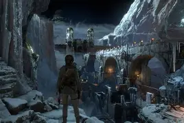
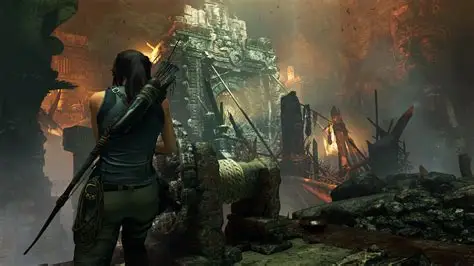
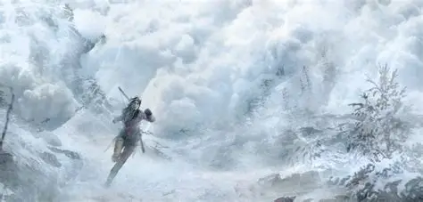
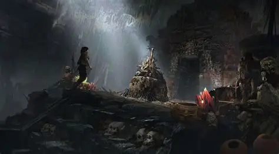

Lara Croft é a protagonista da franquia Tomb Raider. Conhecida por sua curiosidade, inteligência, coragem e espírito explorador.
Sua paixão pela arqueologia a leva a explorar lugares desconhecidos, descobrir civilizações antigas e desvendar mistérios históricos.
Tomb Raider surgiu em 1996 e apresentou ao mundo Lara Croft, uma exploradora que percorre diferentes regiões em busca de artefatos antigos e segredos escondidos em ruínas.
Com cenários misteriosos, desafios, enigmas e exploração, a franquia conquistou fãs e se tornou um dos nomes marcantes dos videogames.

Os primeiros jogos apresentaram exploração, enigmas e aventuras em locais antigos.

Novas histórias, cenários e recursos trouxeram mudanças ao universo da franquia.

Uma nova origem mostrou o início da jornada de Lara e sua transformação em exploradora.
Universo Tomb Raider
Desenvolvido por Ana Julia